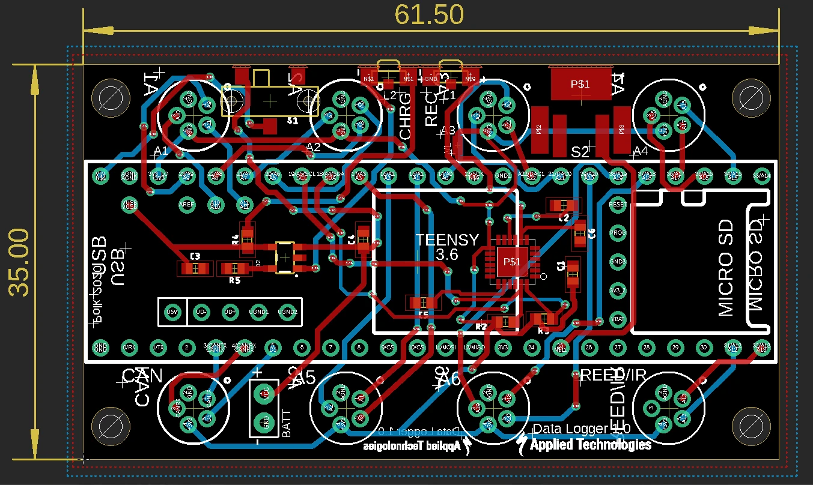
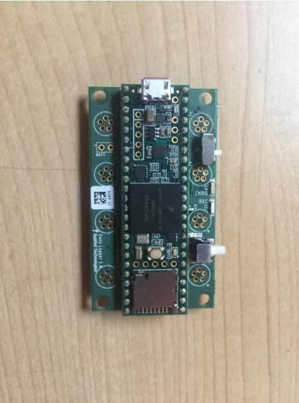
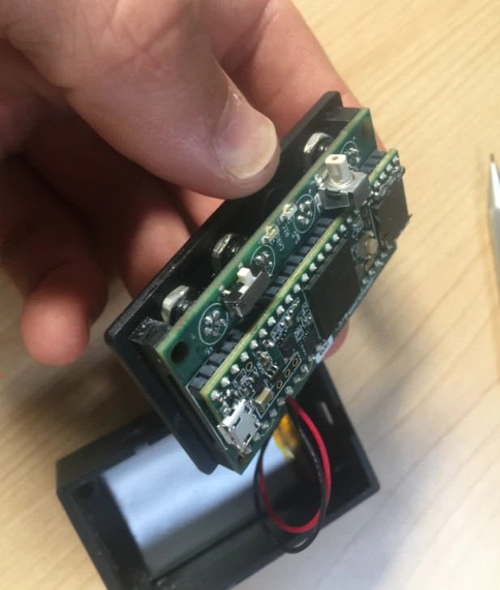
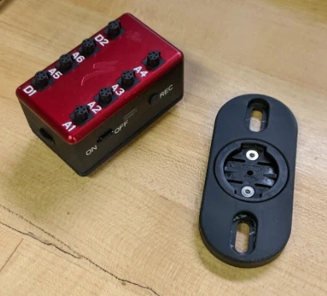
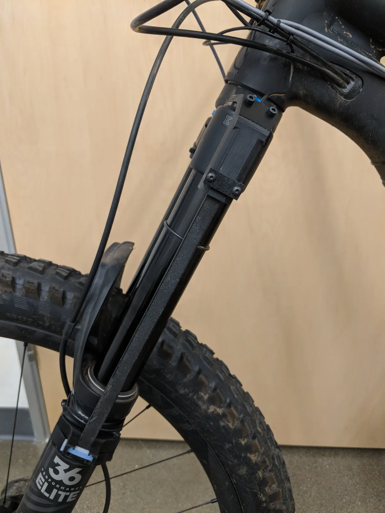
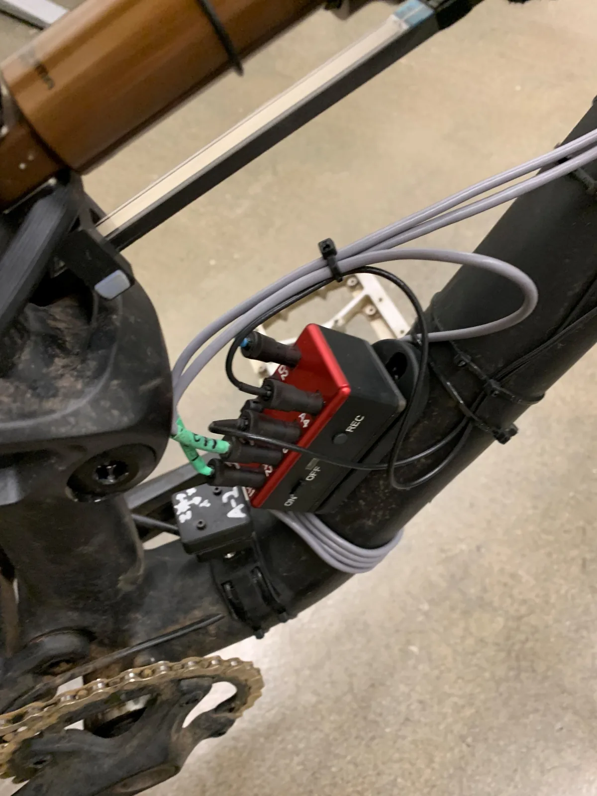
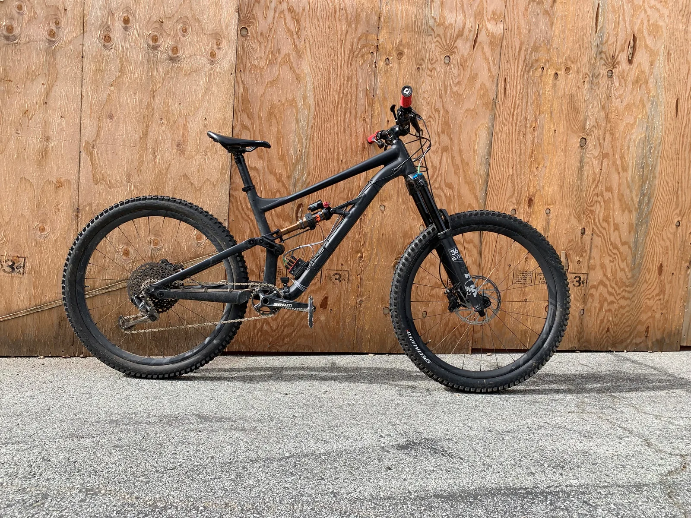
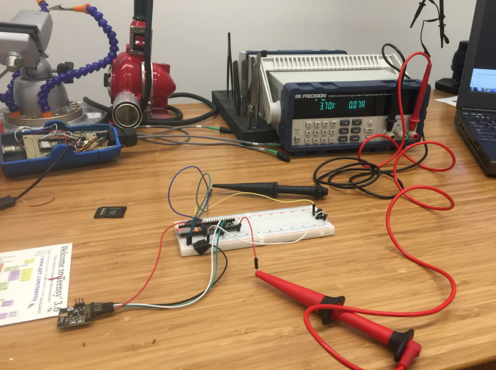

Data Acquisition
To get trustworthy suspension and ride-dynamics data you need a logger that fits the bike and the problem. So I designed one from the board up — the same DAQ that captured the data behind the LET and suspension work.
CUSTOM PCBTEENSYLi-ION CHARGING6 DIG · 2 ANALOG
The logger is built around a Teensy soldered to a custom PCB, with a designed-in Li-ion charging circuit. It carries a 3-axis accelerometer and 3-axis gyroscope, six digital and two analog channels, and external channels for logging signals like a shaft-displacement potentiometer for fork position. A quick-snap mount makes it a full-frame, grab-and-go instrument.







